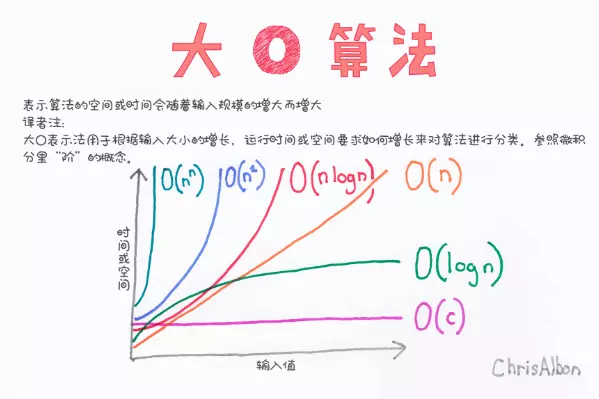

【JS-Task2】常见的排序算法有哪些？如何实现这些算法？
小课堂【深圳-WEB-C组】
分享人：韩鹏
目录
1.背景介绍
2.知识剖析
3.常见问题
4.解决方案
5.编码实战
6.扩展思考
7.参考文献
8.更多讨论
1.背景介绍
在计算机科学与数学中，排序算法（Sorting algorithm）是一种能将一串资料依照特定排序方式进行排列的一种算法。
最常用到的排序方式是数值顺序以及字典顺序。
有效的排序算法在一些算法（例如搜寻算法与合并算法）中是重要的， 如此这些算法才能得到正确解答。
排序算法也用在处理文字资料以及产生人类可读的输出结果。
基本上，排序算法的输出必须遵守下列两个原则：
一、输出结果为递增序列（递增是针对所需的排序顺序而言）；
二、输出结果是原输入的一种排列、或是重组；
2.知识剖析
查找和排序算法是算法的入门知识，其经典思想可以用于很多算法当中。因为其实现代码较短，应用较常见。 所以在面试中经常会问到排序算法及其相关的问题。但万变不离其宗，只要熟悉了思想，灵活运用也不是难事。一般在面试中最常考的是快速排序和冒泡排序，并且经常有面试官要求现场写出这两种排序的代码。对这两种排序的代码一定要信手拈来才行。除此之外，还有插入排序、冒泡排序、堆排序、基数排序、桶排序等。
常见的几种算法：
冒泡算法、选择排序、插入排序、希尔排序、归并排序、快速排序
算法的特点：
1.有限性：一个算法必须保证执行有限步之后结束。
2.确切性： 一个算法的每一步骤必须有确切的定义。
3.输入：一个算法有零个或多个输入，以刻画运算对象的初始情况，所谓零个输入是指算法本身给定了初始条件。
4.输出：一个算法有一个或多个输出。没有输出的算法毫无意义。
5.可行性：算法中执行的任何计算步骤都是可以被分解为基本的可执行的操作步，即每个计算步都可以在有限时间内完成（也称之为有效性）。
3.常见问题
常见的排序算法及实现方法？
4.解决方案
冒泡排序：

从第一个数开始，相邻元素两两对比，小的数放前面。（每循环一次，最后一个数都会被确定下来，为每轮的最大数）
选择排序：

从第一个数开始，循环一圈找最小的数交换位置。（每循环一圈，第一个数都会被确定下来，为每轮最小的值）
插入排序：

从第二个数开始，跟前一个数比较，若比前一个数小，则交换位置，接着跟前一个数比较，直到比前一个数大为止。
希尔排序：
希尔排序属于插入类排序，是将整个有序序列分割成若干个小的子序列分别进行插入排序。
排序过程：先取一个正整数d1<n，把所有序号相隔d1的数组元素放一组，组内进行直接插入排序，然后取d2<d1，重复上述分组和排序操作，直至d=1，即所有记录放进一个组中排序为止。
优点：当n值很大时，数据项每一趟排序需要移动的个数很少，但数据项的距离很长；当n值减小时，每一趟需要移动的数据增多，此时已经接近于它们排序后的最终位置。

归并排序：

将原数组用二分法一直分到两个数为一组，然后通过比较将较小的数放到前面（通过一个中间数组排序）；然后一层层向上排序。
快速排序：
快速排序思想：先找到一个基准点（一般指数组的中部），然后数组被该基准点分为两部分，依次与该基准点数据比较，如果比它小，放左边；反之，放右边。 左右分别用一个空数组去存储比较后的数据。最后递归执行上述操作，直到数组长度<=1。
5.代码实战
6.拓展思考
时间复杂度: 一个算法执行所耗费的时间。
空间复杂度: 运行完一个程序所需内存的大小。 

7.参考文献
参考一：JS实现十大算法可视化
参考二： 常见排序算法之JavaScript实现
8.更多讨论
鸣谢
感谢大家观看
BY : 韩鹏